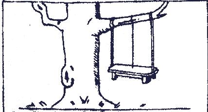

Génie logiciel
(
english
)
Ce que demande le client ...
Ce que prévoit le contrat ...

Ce que l'analyste a prévu ...
Ce que le programmeur a écrit ...
Ce que la mise au point a fait ...
Ce que les tests ont présenté ...
Ce qu'il fallait ...
The end